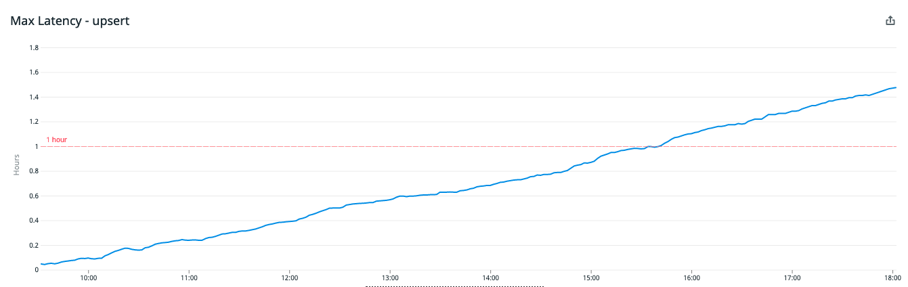

Note: This post was originally published on heap’s blog
Audit tables record changes that occur to rows in another table. They’re like commit logs for database tables, and they’re typically used to figure out who made what changes when. But surprisingly, we’ve found them useful for keeping our distributed Postgres cluster stable.
To convince you of the stability-related value of audit tables, we’ll cover how audit tables helped us avoid a serious incident. Then, we’ll briefly cover how you can create audit tables in your own Postgres databases.
The almost incident
Heap is a product analytics tool that automatically captures web and mobile behavior like page views, clicks, and mobile touches. We’re operating at a scale of billions of events per day, which we store across a distributed Postgres cluster.
The cluster has a coordinator node, which contains metadata about what data lives on which worker nodes. All our data is either a user or an event, so our metadata looks like this:
| table | shardid | nodename |
|---|---|---|
| users | 23258 | 137.185.251.252 |
| events | 15987 | 137.185.251.252 |
| users | 6866 | 61.21.220.173 |
| events | 22508 | 61.21.220.173 |
| users | 4204 | 6.182.224.250 |
| events | 10033 | 6.182.224.250 |
| users | 20570 | 117.5.38.108 |
| events | 4248 | 117.5.38.108 |
| users | 18658 | 0.85.220.110 |
| events | 27033 | 0.85.220.110 |
Our write path uses this metadata to determine where incoming users and events need to be written.
Notice that each node is the home for a users table and a corresponding events table. Each users table is located with an events table that contains the events performed by those users. It’s crucial that these two tables are co-located on the same machine, so that we can join them during queries without having to send data over the network. The Kafka consumers that write to these workers check that this invariant is satisfied before doing any writing to workers.
This makes changing the coordinator metadata a potentially dangerous affair. If we accidentally violate the invariant, the consumers won’t ingest any more data until the metadata is fixed. This is a problem because we want our users to be able to answer questions about how their product is being used in real-time; they shouldn’t have to wait hours for their event data to show up in Heap analyses. We call this delay “ingestion latency,” and we strive to keep it on the order of a minute or two.
Although changing the coordinator metadata is potentially dangerous, it’s unavoidable. Sometimes we need to re-balance data across the cluster, or, in our case, perform a schema migration across many shards in the cluster. It was during a schema migration that we nearly caused some severe ingestion latency.
We wanted to perform our schema migration on our distributed events table with no down-time and no ingestion latency. Since you can’t write to a table while changing its schema, we decided that for each shard, we should:
- Copy data to a new shard with the new schema on the same worker
- Add the new shard id to the coordinator metadata table
- Drop the old shard from the coordinator metadata table and the worker
Unfortunately, the Node code we wrote to do this had a bug: it treated a string as if it was a number. After migrating a shard to a new schema, we created a new shard id by adding a fixed number to the old shard id and then dropping the entry for the old shard from the coordinator. However, because the shardid was a string, adding the offset resulted in concatenation, which in turn resulted in a new shardid that was rejected by the coordinator because it was too large to fit into an bigint:
const shardIdString = 952025954;
const shardIdNumber = 952025954;
const offset = 2000000000;
// what we expected
console.log(shardIdNumber + offset);
2952025954
// what we got (oh no!)
console.log(shardIdString + offset);
9223372036854775807
Although we use Typescript to mitigate these types of bugs, when we’re working with external systems, it’s easy to find yourself in a situation where the types are lying to you. Fortunately, our code didn’t delete any shard data unless metadata for the migrated shard was added to the coordinator. Unfortunately, because of this bug, the coordinator metadata still wound up in a state where it was missing event shard metadata for a particular worker.
A few minutes later, the on-call engineer was paged with a link to our ingestion latency metrics:

Ingestion latency was spiking, but after we discovered the bug in our code, we were able to quickly reverse the removal of these shard metadata entries using our audit tables. The SQL to restore the deleted metadata looked a little like this:
INSERT INTO pg_dist_shard
SELECT logicalrelid, shardid, nodename FROM dist_shard_audit
WHERE action = 'DELETE' AND log_time > now() - '1 minutes'::interval;
Without the audit table, this minor incident would have been much more severe because it would have been much more difficult to track down which shards were deleted and to quickly re-add those shards back to the table. Logs would have been our only way to fix this, and we can all imagine how difficult it would have been to reconstruct the correct table using logs.
How to create audit tables
To make an audit table, start by creating an ordinary table with:
- Columns that match the columns of the table you want to audit
- Some additional columns that describe the changes made to the audited table.
For example, an audit table for the above pg_dist_shard table would look like this:
create type audit_action as enum ('SNAPSHOT',
'INSERT',
'UPDATE_OLD',
'UPDATE_NEW',
'DELETE'
);
create table pg_dist_shard (
table regclass NOT NULL,
shardid bigint NOT NULL,
nodename text NOT NULL,
action audit_action NOT NULL,
log_time timestamp with time zone NOT NULL
);
The trigger procedure would look like this:
create function tg_audit_dist_shard() returns trigger
language plpgsql
as
$$
DECLARE
audit_entry int := nextval('audit_entry_seq'::regclass);
BEGIN
IF (TG_OP = 'INSERT') THEN
INSERT INTO dist_shard_audit
VALUES (now(), audit_entry, TG_OP::audit_action, TG_RELID::regclass, NEW.*);
RETURN NEW;
ELSIF (TG_OP = 'UPDATE') THEN
INSERT INTO dist_shard_audit
VALUES (now(), audit_entry, 'UPDATE_OLD'::audit_action, TG_RELID::regclass, OLD.*),
(now(), audit_entry, 'UPDATE_NEW'::audit_action, TG_RELID::regclass, NEW.*);
ELSIF (TG_OP = 'DELETE') THEN
INSERT INTO dist_shard_audit
VALUES (now(), audit_entry, TG_OP::audit_action, TG_RELID::regclass, OLD.*);
RETURN OLD;
END IF;
RETURN NULL;
END;
This code uses a few special variables that are automatically defined for triggers:
| variable | description |
|---|---|
| TG_OP | The CRUD operation that invoked this trigger function |
| TG_RELID | The table being operated on |
| OLD | The old RECORD of the row that’s being updated or deleted |
| NEW | The new RECORD that’s being updated or inserted |
After defining a trigger like the one above, we can wire it up with the following SQL:
CREATE TRIGGER pg_dist_shard_audit
AFTER INSERT OR UPDATE OR DELETE ON pg_dist_shard
FOR EACH ROW EXECUTE PROCEDURE tg_audit_dist_shard();
Conclusion
So, audit tables aren’t just useful for seeing who changed what in your database. They also make it easy to undo and/or redo changes that may cause issues downstream in your system. If that sounds appealing and you’re okay with the overhead of introducing a few triggers to the table you’re auditing, consider creating audit tables in your own system. They’re a great fit for metadata tables like these, which are small and contain key information.
If you like nerding out about underrated Postgres features, @-me on Twitter @philosohacker, and if you like working on large data systems, we’re hiring! Check out our team and open roles.
I’d like to thank John Krauss and Daniel Robinson for their essential feedback on earlier drafts of this post.